An AI-powered football referee system using computer vision to analyze match footage and make real-time decisions
Airef is an AI-driven football referee system designed to analyze match videos in real-time and detect fouls, penalties, yellow cards, and red cards. By leveraging state-of-the-art computer vision and deep learning models, Airef simulates the decision-making process of a professional referee.
Built with Python, YOLO for object detection, and OpenCV for video processing, the system tracks players, the ball, and match events to classify actions and flag rule violations. This project explores the intersection of artificial intelligence and sports analytics, aiming to assist referees and provide data-driven insights for match analysis.
A live demonstration video showcasing real-time football match analysis is currently in production. Stay tuned for updates as the system progresses through development.
Processes football match footage frame-by-frame to identify players, ball position, and on-field events as they happen.
Identifies illegal tackles, pushes, trips, and handballs through pose estimation and player interaction analysis.
Classifies foul severity to recommend yellow card cautions or red card ejections based on tackle intensity and position.
Tracks up to 22 players plus the ball simultaneously using YOLO-based detection with temporal consistency filtering.
Categorizes play events — passes, shots, tackles, fouls, corners, and goals — with timestamps for post-match review.